避難所レイアウトツール
使い方マニュアル
施設の図面の上に居住スペースや受付などの区画を並べ、避難所のレイアウトを検討するためのツールです。
Copyright © 2026 Smart Implement Naoyuki Shiba
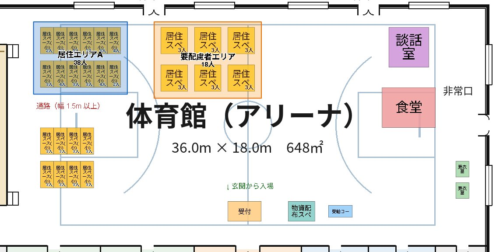
このマニュアルについて
このマニュアルは、避難所の運営担当の方や、訓練・検討会の参加者が、ツールの使い方を一通り身につけるためのものです。画面の写真は、ツールに入っているサンプル「架空の体育館」を使っています。
- HTML 版（この画面）：ツールの ？ ボタンや、メニュー画面の 使い方マニュアル から開けます。
- PDF 版（印刷用）：入手先は 「PDF 版・最新版の入手先」 にまとめています。
目次
- はじめに
- メニュー画面
- 避難所レイアウト（画面の見方／基本の流れ／図面／縮尺／区画／居住者／選択・コピー・削除／ゾーン／区画を囲むゾーン／ゾーンの回転／テキスト／階層／元に戻す・やり直し／保存と読み込み／区画リストの編集／設定）
- 区画エディタ
- 区画印刷
- マルチ操作（同時編集）
- タブレットで使う
- 困ったとき
- キー操作の一覧
- PDF 版・最新版の入手先
1. はじめに
このツールでできること
- 施設の図面（画像または PDF）を読み込み、実際の寸法で区画を並べる
- 区画ごとに、居住者の人数（健常者・要配慮者など）を入れて集計する
- 「居住エリア」などの範囲（ゾーン）を描き、ゾーンごとの人数を数える
- 複数の階層（1F・2F など）を 1 つのレイアウトにまとめる
- 区画の種類（名前・大きさ・色・画像）を自分で作る（区画エディタ）
- 区画を実寸の縮尺で紙に印刷し、机上で並べて検討する（区画印刷）
- 同じ Wi‑Fi の何台かの端末で、1 つのレイアウトを同時に編集する（マルチ操作）
ツールの種類
| 種類 | 使い方 | 向いている場面 |
|---|---|---|
| ブラウザ版 | インターネット上のページをブラウザで開く（インストール不要） | まず試してみたい・一人で検討する |
| 単体動作版（避難所レイアウト） | Windows にインストールして使う。インターネットに接続しなくても動く | オフラインの端末・一人で検討する |
| コラボ版（避難所レイアウト（コラボ）） | ホスト役の Windows パソコンにだけインストールする。参加者はブラウザで参加 | 訓練・検討会で、何人かで同時に編集する |
どの種類も、操作の方法は同じです。マルチ操作（同時編集）だけはコラボ版で使えます。
データの保存について
- 作業中のレイアウトは、使っている端末（ブラウザ）の中に自動で保存され、次に開いたときに元の状態に戻ります。
- 別のパソコンに持っていくときや、作業を残しておきたいときは、レイアウト保存 でファイル（
.layout.json）に保存してください（保存と読み込み）。
3. 避難所レイアウト
3.1 画面の見方
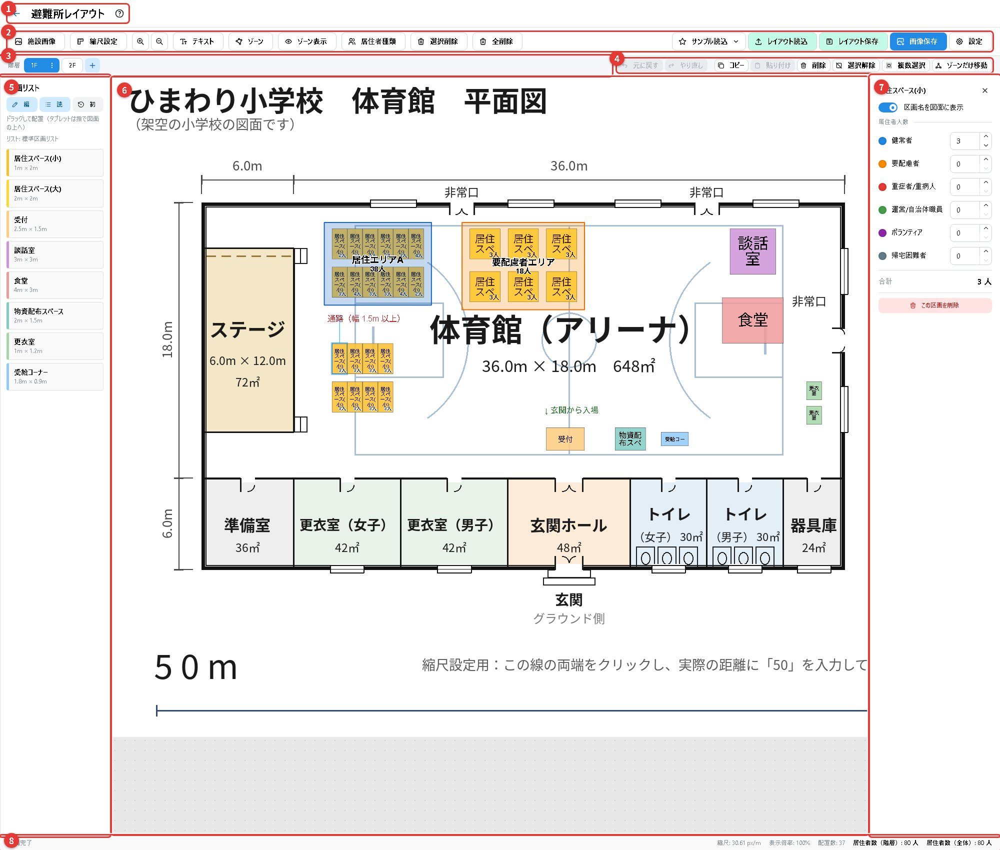
| 番号 | 名前 | 役割 |
|---|---|---|
| 1 | 見出し | ← メニューに戻る ／ ？ このマニュアルを開く |
| 2 | ツールバー | 図面の読み込み・縮尺・テキスト・ゾーン・保存などの操作 |
| 3 | 階層タブ | 階層（1F・2F など）の切り替え・追加・名前の変更 |
| 4 | 編集操作の帯 | 元に戻す・やり直し・コピー・貼り付け・削除・選択解除など |
| 5 | 区画リスト | 配置できる区画の一覧。ここから図面へドラッグして置きます |
| 6 | 図面 | 区画・ゾーン・テキストを配置する場所。マウスのホイールで拡大・縮小、何もない所をドラッグで移動 |
| 7 | 設定パネル | 選んだものの設定（区画なら人数、ゾーンなら色やラベル） |
| 8 | ステータスバー | 操作の結果やヒント、縮尺・表示倍率・配置数・居住者数の合計 |
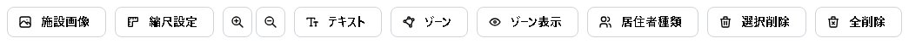
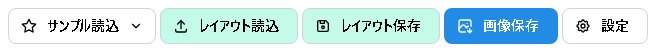
| ボタン | 内容 |
|---|---|
| 施設画像 | 表示中の階層に、図面の画像（PNG・JPEG など）または PDF を読み込みます |
| 縮尺設定 | 図面上の 2 点と実際の距離から、図面の縮尺を合わせます |
| 虫めがね（＋・−） | 図面を拡大・縮小します |
| テキスト | 図面に文字を置きます |
| ゾーン | 範囲（ゾーン）を描きます |
| ゾーン表示 | ゾーンの表示・非表示を切り替えます |
| 居住者種類 | 居住者の種類（健常者・要配慮者など）を設定します |
| 選択削除 全削除 | 選んだものを削除 ／ 表示中の階層の配置物と図面をすべて削除 |
| サンプル読込 | ツールに入っているサンプルのレイアウトを読み込みます |
| レイアウト読込 レイアウト保存 | レイアウトのファイル（.layout.json）を読み込む ／ 保存する |
| 画像保存 | 表示中の図面を PNG 画像で保存します（資料の作成に） |
| 設定 | 吸着（スナップ）や角度の刻みなどの設定（設定） |
3.2 基本の流れ
- 施設画像 で施設の図面を読み込む（3.3）
- 縮尺設定 で図面の縮尺を合わせる（3.4）
- 左の区画リストから、居住スペースや受付などを図面へドラッグして置く（3.5）
- 区画を選んで、居住者の人数を入れる（3.6）
- 必要に応じて、ゾーンで「居住エリア」などの範囲を作る（3.8）
- レイアウト保存 でファイルに保存する（3.14）
3.3 図面を読み込む
- 図面を入れたい階層のタブ（1F など）を選びます。
- 施設画像 を押し、図面のファイルを選びます。画像（PNG・JPEG など）と PDF に対応しています。
- 画像の場合は、そのまま図面として読み込まれます。
PDF の図面を読み込む
PDF を選ぶと、次の画面が開きます。読み込むページや、向き・切り抜く範囲を決めてから この階層の図面として読み込む を押してください。
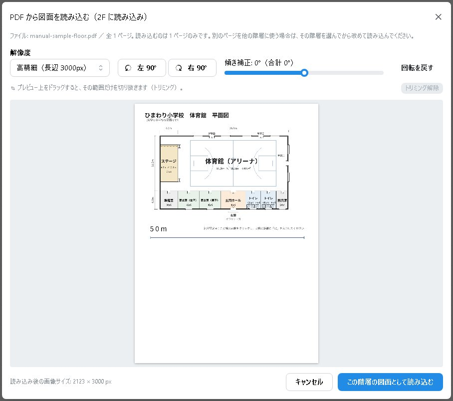
- ページ：複数ページの PDF では、ページを送って選びます。1 回に読み込めるのは 1 ページで、表示中の階層に入ります。別のページは、別の階層で改めて読み込みます。
- 解像度：画像にするときの大きさ（長辺 2000／3000／4000 ピクセル）。細かい図面ほど大きくします（既定 3000）。
- 回転：90° 単位の回転と、±45° の傾きの補正ができます。
- トリミング：プレビューの上をドラッグすると、その範囲だけを読み込みます。
スキャナで取り込んだ PDF（複合機の白黒スキャンなど）も読み込めます。
3.4 縮尺を合わせる
区画を実際の大きさで置くために、図面の縮尺を合わせます。図面の中で、長さの分かっている 2 点（寸法線の両端や、柱と柱など）を使います。
- 縮尺設定 を押します（ボタンが「縮尺設定中…」に変わります）。
- 図面上の 1 点目をクリックし、続けて 2 点目をクリックします。
- 開いた画面に、2 点の間の実際の距離と単位（m または cm）を入れて 適用 を押します。
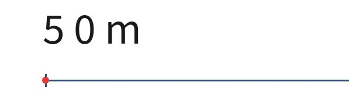
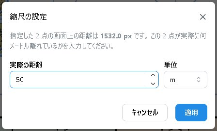
3.5 区画を配置する
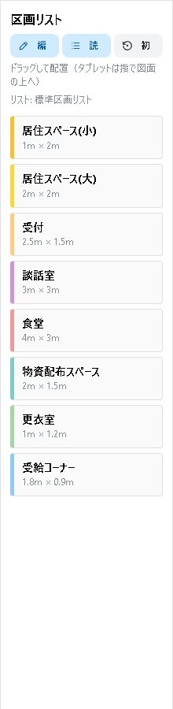
- 左の区画リストから、置きたい区画（「居住スペース(小)」など）を選びます。
- そのまま図面の上へドラッグし、置きたい場所で離します。
区画は、区画リストに書かれた実際の大きさ（例：1m × 2m）で置かれます。
区画リストの上の 編集 読込み 初期化 で、区画の種類の編集・別の区画リストの読み込み・既定に戻すができます（3.15）。
移動・回転・大きさの変更
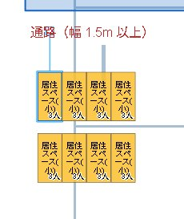
- 移動：区画をドラッグします。
- 回転：区画をクリックして選び、上に出る小さな四角のつまみを回します。15° ごとに止まります（設定で変えられます）。
- 大きさの変更：四隅のつまみをドラッグします（大きさを変えてよい区画だけ）。
3.6 居住者の人数
居住スペースなどの区画を選ぶと、右側に区画のパネルが出ます。居住者の種類ごとに人数を入れてください。
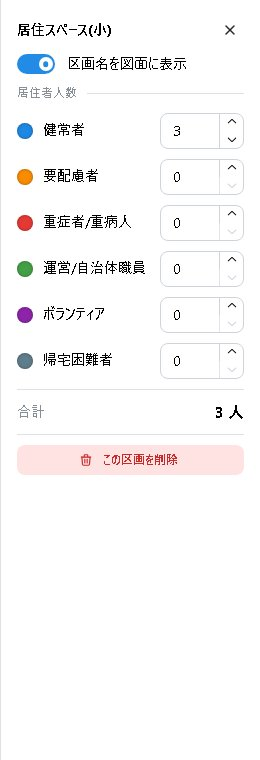
- 人数は種類ごとに入れ、合計が自動で出ます。
- 入れた人数は、図面上の区画にも表示されます。
- 区画名を図面に表示：この区画だけ、区画名の表示・非表示を切り替えます。
- この区画を削除：区画を削除します。
画面下のステータスバーに、表示中の階層と全階層の居住者数の合計が出ます。
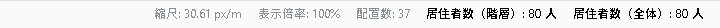
居住者の種類を設定する
居住者種類 で、種類の名前と色を変えたり、種類を足したりできます。最初は「健常者・要配慮者・重症者/重病人・運営/自治体職員・ボランティア」の 5 種類です。
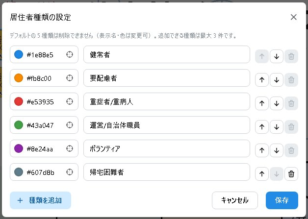
3.7 選択・コピー・削除
複数の区画を選ぶ
- Shift を押しながら区画をクリックすると、選んだ区画に足したり外したりできます。
- Shift を押しながら、図面の何もない所からドラッグすると、四角で囲んだ区画をまとめて選べます。
- タブレットでは、編集操作の帯の 複数選択 を ON にしてからタップします。
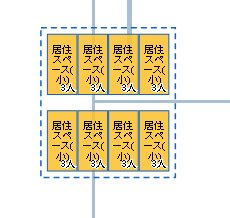
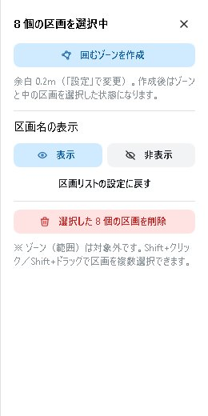
複数の区画を選んだまま区画をドラッグすると、まとめて動きます。複数選択のパネルでは、区画名の表示の一括切り替え・まとめて削除・区画を囲むゾーンの作成ができます。
コピー・貼り付け・削除
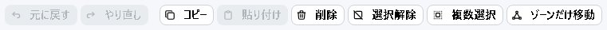
| 操作 | ボタン | キー |
|---|---|---|
| 元に戻す ／ やり直し | 元に戻す やり直し | Ctrl+Z ／ Ctrl+Y |
| コピー | コピー | Ctrl+C |
| 貼り付け | 貼り付け | Ctrl+V |
| 削除 | 削除 | Delete |
| 選択解除 | 選択解除 | Esc |
- 貼り付けると、元の位置から少し右下にずれた所に置かれます。人数もそのままコピーされます。
- コピーしたものは、別の階層にも貼り付けられます。
3.8 ゾーン
ゾーンは、「居住エリアA」「要配慮者エリア」のような範囲です。色の付いた多角形で表示され、ゾーンの中に完全に収まっている区画の人数を数えて表示します。
ゾーンを描く
- ゾーン を押します（「ゾーン作図中…」に変わります）。
- 図面上で、範囲の角を 1 つずつクリックします。
- 最初の点をもう一度クリックするか、ダブルクリックするか、左下の 確定 を押すと完成します（3 点以上）。
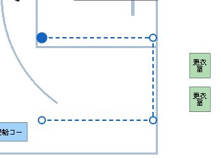
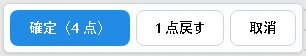
描くのをやめるときは 取消 か Esc、置いた点を 1 つ戻すときは 1 点戻す です。
ゾーンの設定
ゾーンをクリックして選ぶと、右側にゾーンの設定が出ます。
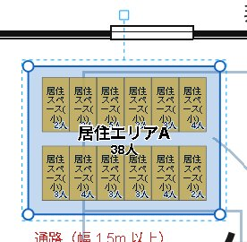
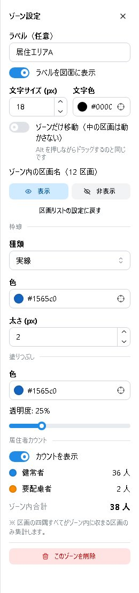
- ラベル：ゾーンの名前。ラベルを図面に表示 を ON にすると図面に出ます（文字の大きさ・色も変えられます）。
- 形を変える：ゾーンの角の丸いつまみをドラッグします。
- 移動：ゾーンをドラッグすると、ゾーンに収まっている区画も一緒に動きます。ゾーンだけを動かしたいときは、Alt を押しながらドラッグするか、ゾーンだけ移動（中の区画は動かさない） を ON にします。
- ゾーン内の区画名：ゾーンに収まっている区画の区画名を、まとめて表示・非表示にします。
- 枠線・塗りつぶし：線の種類（実線・破線・点線）・色・太さ、塗りの色と濃さ。
- カウントを表示：ゾーンの中の居住者数を図面に表示します。
ゾーン内選択（ゾーンと中の区画をまとめて選ぶ）
選んでいるゾーンをもう一度クリックすると、ゾーンに完全に収まっている区画もまとめて選ばれます（ゾーン内選択）。もう一度クリックすると、ゾーンだけの選択に戻ります。
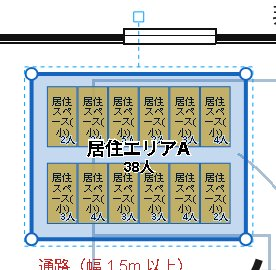
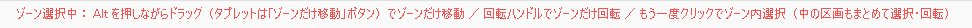
3.9 区画を囲むゾーンを作る
並べた区画を後からゾーンにまとめたいときは、区画を選んでボタンを押すだけで、それらを囲むゾーンを作れます。
- ゾーンにまとめたい区画を、Shift+クリックなどで複数選びます（図 12）。
- 右の複数選択のパネルで 囲むゾーンを作成 を押します（図 13）。
- 選んだ区画をすべて囲む、凸形のゾーンができます。作ったあとは、ゾーンと中の区画を選んだ状態（ゾーン内選択）になります。
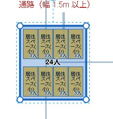
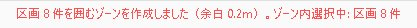
- 区画の外周からゾーンの線までの余白は、最初は 0.2m です。設定 の「囲むゾーンの余白」で変えられます（0.01m 以上）。
- ゾーンの角は格子に吸着しません。他のゾーンや区画に吸い付くこともありません。
- できたゾーンの色やラベルは、ふつうのゾーンと同じように設定できます。
- 選んでいなかった区画でも、ゾーンに完全に収まっていればゾーン内選択に含まれます。
3.10 ゾーンを回転する
ゾーンを選ぶと、ゾーンの上に回転用の丸いつまみが出ます。つまみを回すと、ゾーンが回転します。
| 選び方 | 回るもの |
|---|---|
| ゾーンだけを選ぶ（1 回クリック） | ゾーンだけ。中の区画は動きません |
| ゾーン内選択（もう一度クリック） | ゾーンと中の区画が一緒に回ります。区画はゾーンに収まったままです |
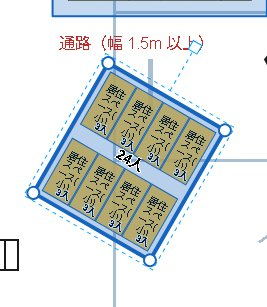
- 区画と同じく 15° ごとに止まります。Ctrl を押しながら回すと、止まる・止まらないが逆になります。
- 回転の中心は、回転の枠（点線）の中心です。
- 回したあと、元に戻す 1 回で、ゾーンと区画がまとめて回転前に戻ります。
3.11 テキスト
- テキスト を押し、文字を置きたい場所をクリックします。
- 開いた画面で、文字・大きさ・色を決めて追加します。
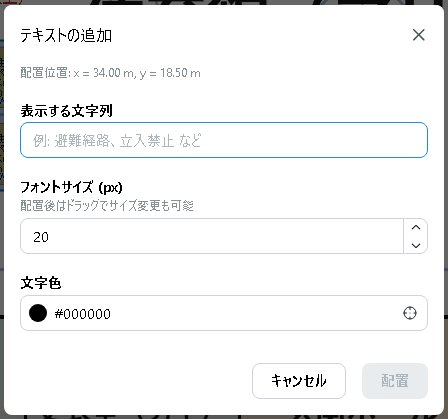
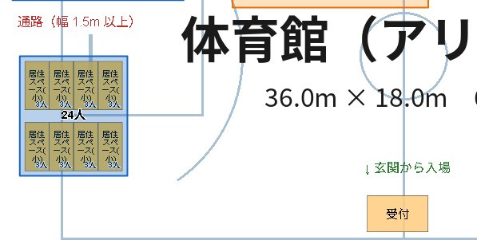
置いたテキストはドラッグで動かせます。ダブルクリックで文字を直せます。選ぶと、回転と大きさの変更もできます。
3.12 階層
体育館の 1 階と 2 階、校舎の各階のように、1 つのレイアウトに複数の階層を持てます。階層ごとに、図面・縮尺・配置物が別になります。
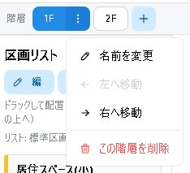
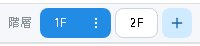
- 切り替え：階層のタブ（1F・2F）をクリックします。
- 追加：＋ を押します。
- 名前の変更・並べ替え・削除：表示中の階層のタブの ⋮ から選びます。
ステータスバーの「居住者数（全体）」は、全階層の合計です。
3.13 元に戻す・やり直し
操作を間違えたときは、元に戻す（Ctrl+Z）で 1 つ前の状態に戻せます。戻しすぎたときは やり直し（Ctrl+Y または Ctrl+Shift+Z）です。
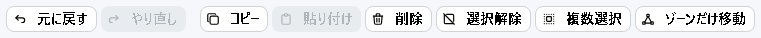
- 配置・移動・回転・大きさの変更・削除・貼り付け・人数・ゾーン・テキスト・図面・縮尺・階層・居住者種類の操作を、100 回分まで戻せます。
- 戻すと、その操作をした階層に切り替わり、そのときに選んでいたものが選ばれた状態になります。
- 人数の入力のように続けて行った入力は、まとめて 1 回で戻ります。
- マルチ操作では、自分の操作だけが戻ります。他の人の変更は戻りません。
- レイアウトの読み込み・サンプルの読み込み・区画リストの読み込みや初期化（これらを行うと、それまでの履歴も消えます）
- 区画リストの編集（区画の追加・編集の画面を開いている間は、元に戻す・やり直しは使えません）
- ページの再読み込みやツールの再起動の前の操作
3.14 保存と読み込み
レイアウトをファイルに保存する
レイアウト保存 を押し、ファイル名を入れて保存します。全階層の図面・縮尺・配置物・人数と、区画リスト・居住者種類がまとめて 1 つのファイル（.layout.json）に入ります。
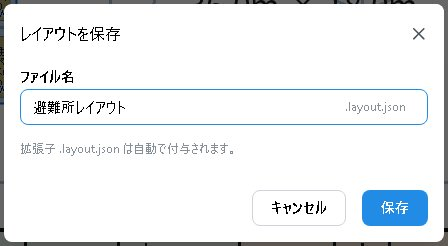
ファイルを読み込む
レイアウト読込 で、保存したファイルを選びます。今のレイアウトは読み込んだ内容に置き換わります（元に戻すでは戻せません）。
サンプルを読み込む
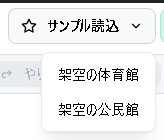
サンプル読込 から「架空の体育館」「架空の公民館」を選ぶと、図面と縮尺が設定されたレイアウトを読み込めます。練習や説明に使えます。
画像として保存する
画像保存 で、表示中の階層の図面を PNG 画像として保存できます。報告資料や掲示物に貼るときに使います。
自動保存
作業中の内容は、端末の中に自動で保存されます。ツールを閉じても、次に開いたときに続きから作業できます（はじめにの注意もお読みください）。
3.15 区画リストの編集
区画リストは、配置できる区画の種類の一覧です。区画リストの上の 編集 を押すと、レイアウトの画面のまま、区画の追加・編集ができます。
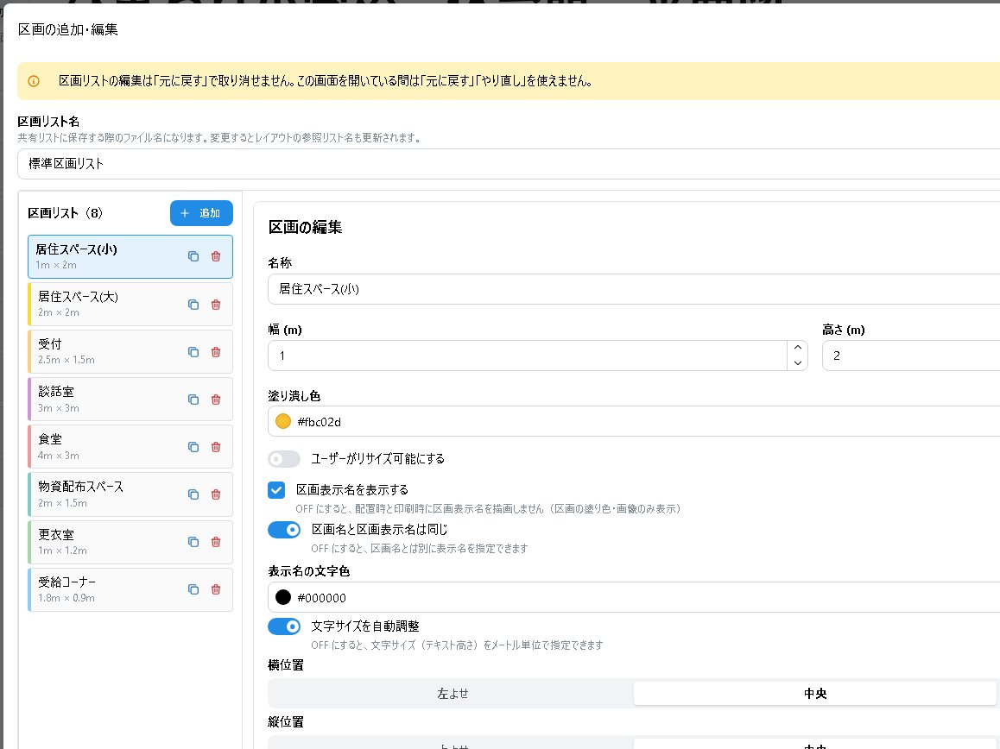
- 編集して閉じると、区画リストに反映されます。共有の区画リストとして保存しておけば、次回も使えます。
- 読込み：区画リストのファイル（
.list.json）を読み込みます。初期化：既定の区画リスト（標準区画リスト／自治体研究会用区画リスト）に戻します。
3.16 設定
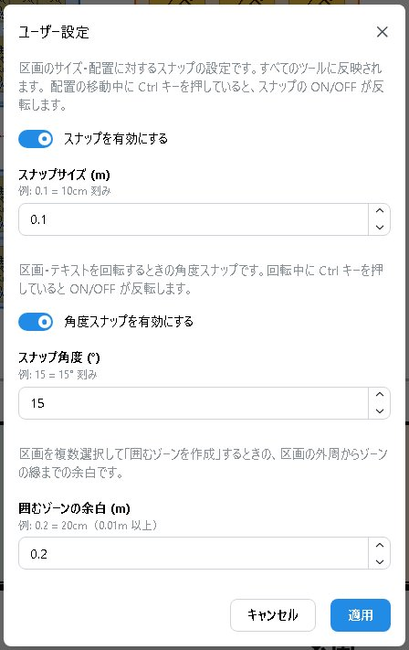
| 項目 | 内容（最初の値） |
|---|---|
| スナップ | 区画の位置・大きさを格子に吸着させる（入・10cm 刻み） |
| 角度スナップ | 区画・テキスト・ゾーンを回すときに、決まった角度で止める（入・15° 刻み） |
| 囲むゾーンの余白 | 区画を囲むゾーンを作るときの余白（0.2m） |
設定は端末ごとに保存され、すべての機能（区画エディタなど）に反映されます。
4. 区画エディタ
区画の種類（居住スペース・受付・物資配布スペースなど）を作り、まとめて「区画リスト」として保存します。メニュー画面の 区画エディタ から開きます。
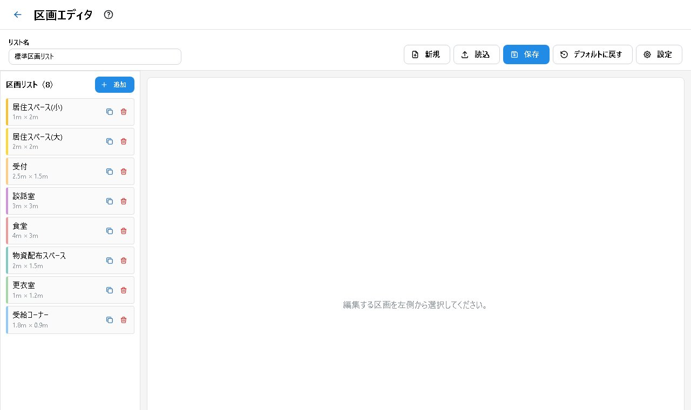
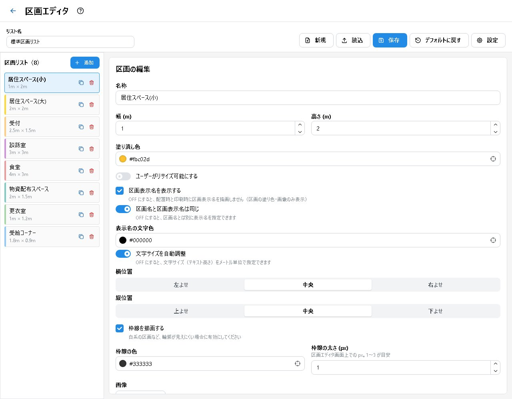
区画ごとに設定できること
- 名前・大きさ（m）・色・大きさを変えてよいか
- 区画表示名：図面に出す名前（区画名と別にもできます）・文字の色と大きさ・位置
- 枠線：表示の有無・色・太さ（白っぽい区画の輪郭を見やすくするため）
- 画像：区画に重ねる画像（おすすめ：512×512 ピクセル・200KB 以下）と、その表示のしかた（区画に合わせる／縦横比を保つ／縮尺を指定）・回転
区画リストの保存
- 保存すると、区画リストのファイル（
.list.json）がダウンロードされ、同時にこの端末の「共有の区画リスト」も更新されます。避難所レイアウトでは、この共有の区画リストが使われます。 - ファイルの読み込み・新規作成・既定に戻す（標準区画リスト／自治体研究会用区画リスト）もできます。
- 保存しないまま画面を離れようとすると、確認が出ます。
5. 区画印刷
区画を実寸の縮尺で印刷し、紙の図面の上に並べて検討するためのページを作ります。メニュー画面の 区画印刷 から開きます。
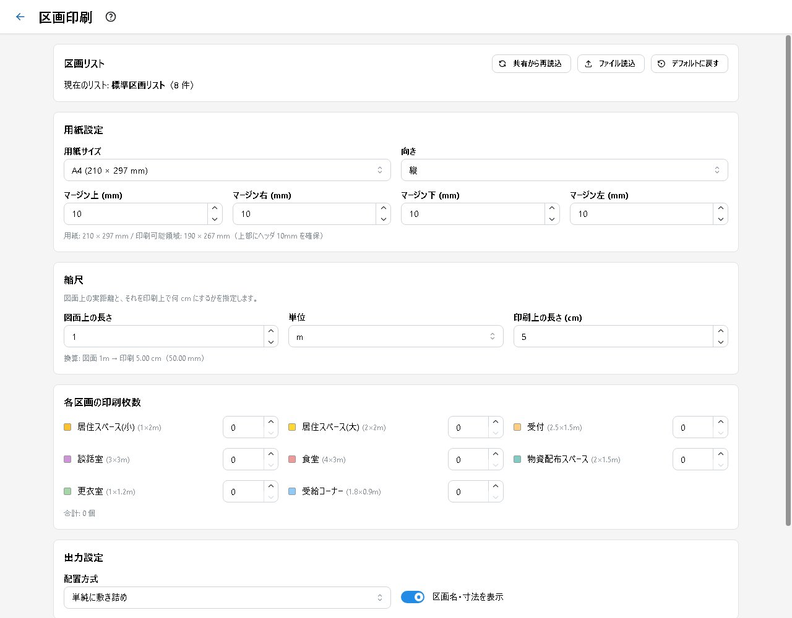
- 区画リストを選びます（共有の区画リスト／ファイルから読み込み／既定）。
- 用紙（A3・A4・B5・自由な大きさ）と向き・余白を決めます。
- 縮尺を、「図面上の長さ」と「印刷したときの長さ」で決めます（例：図面上 1m を 1cm で印刷）。
- 区画ごとに印刷する枚数を決めます。
- 並べ方（そのまま敷き詰める／同じ種類をまとめる／1 種類 1 ページ）を選び、印刷用のページを作ります。
- 保存された HTML ファイルをブラウザで開き、Ctrl+P で印刷します。
6. マルチ操作（同時編集）
コラボ版を使うと、同じ Wi‑Fi（LAN）につないだ何台かの端末で、1 つのレイアウトを同時に編集できます。訓練や検討会で、グループで話し合いながら配置を決めるときに便利です。
準備（ホスト役の 1 台だけ）
- ホスト役の Windows パソコンに、コラボ版のインストーラ（
EvacuationShelterLayout-Collab-Setup-…exe）でインストールします。 - 「避難所レイアウト（コラボ）」を起動します。初回はファイアウォールの確認が出るので、プライベートネットワークで許可してください。
- レイアウトの画面が開きます。上部に、マルチ操作の状態が表示されます。
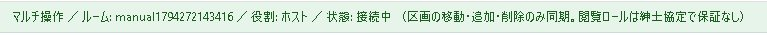
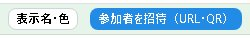
参加者を招待する
- ホストの画面の 参加者を招待（URL・QR） を押します。
- 「ネットワーク」で、参加者と同じ Wi‑Fi のアドレスを選びます。
- 参加者は、表示された URL をブラウザで開くか、QR コードをタブレットのカメラで読み取ります。
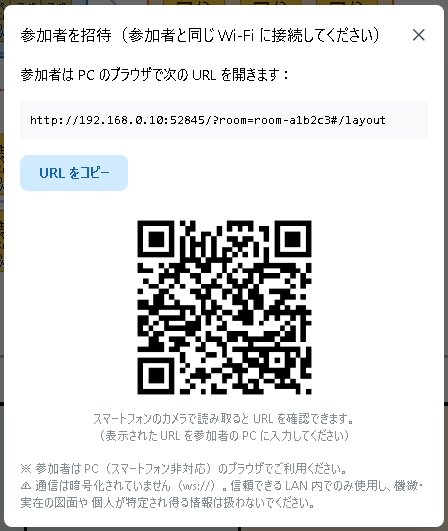
表示名と色
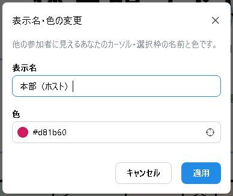
画面上部の 表示名・色 で、自分の名前と色を決めます。他の人の画面には、あなたのカーソルが色付きの点と名前で、選んでいるものが色付きの点線の丸で表示されます。
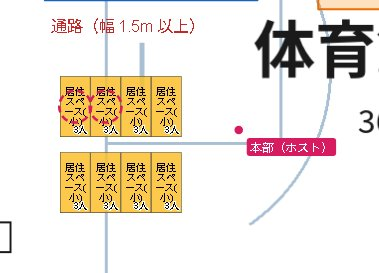
同時編集のきまり
- 全階層の図面・縮尺・区画・ゾーン・テキスト・人数・居住者種類・区画リストが、全員に反映されます。
- 表示中の階層・選択・拡大率は、人それぞれです。
- 図面・レイアウト・サンプルの読み込みは、ホストだけができます。
- 元に戻すでは、自分の操作だけが戻ります。ホストがレイアウトを読み込むと、全員の履歴が消えます。
- ホストと参加者は、同じバージョンのツールを使ってください。
- 通信は暗号化されていません。信頼できる閉じた LAN の中だけで使い、共用の Wi‑Fi やゲスト用のネットワークでは使わないでください。
- URL を知っている人は誰でも、レイアウトを見たり書き換えたりできます。
- 実在の施設の機微な図面や、個人が特定できる情報は扱わないでください。
参加者がつながらないとき
- 招待の画面で、参加者と同じ Wi‑Fi（または有線 LAN）のアドレスを選んでいるか確かめます。
- ファイアウォールやセキュリティソフト（ESET など）が、受信をブロックしていないか確かめます。セキュリティソフトに、アプリの受信の許可を追加してください。
- 確かめるときは、ping ではなく、参加用の URL をブラウザで開いて試してください。
7. タブレットで使う
iPad などのタブレットでも、ブラウザ版や、マルチ操作の参加者として使えます。キーボードの代わりに、画面のボタンを使います。
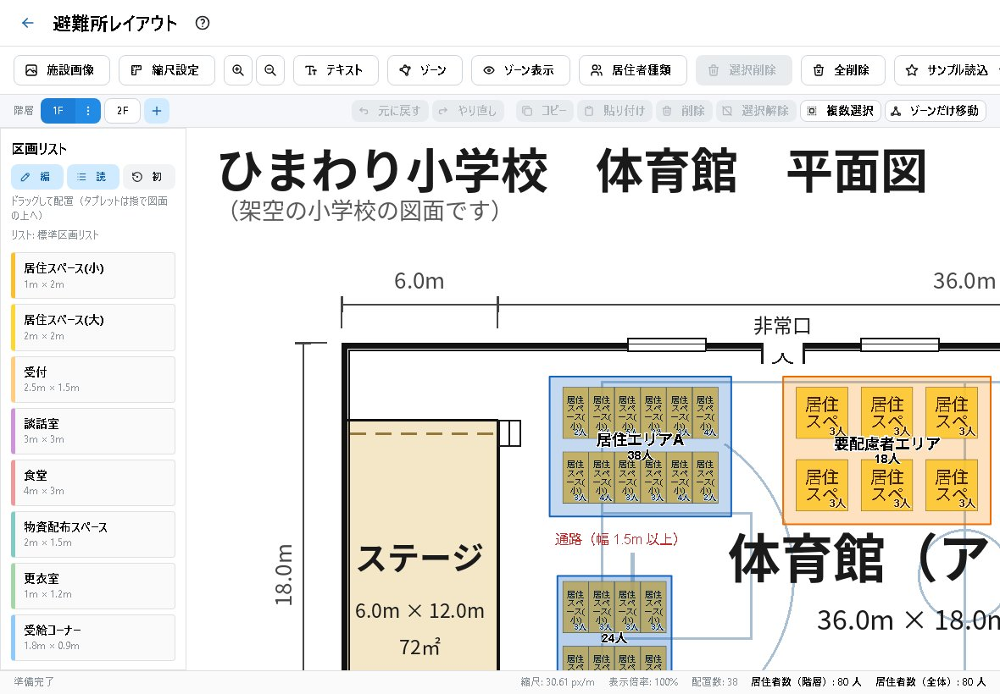
| 操作 | タブレットでのやり方 |
|---|---|
| 区画を置く | 区画リストの区画を指で押さえたまま、図面の上へ動かして離す |
| 拡大・縮小 ／ 図面の移動 | 2 本の指で広げる・つまむ ／ 何もない所を 1 本の指でなぞる |
| 複数選択（Shift の代わり） | 編集操作の帯の 複数選択 を ON にしてタップ |
| ゾーンだけ移動（Alt の代わり） | ゾーンだけ移動 を ON にしてドラッグ |
| 元に戻す・コピー・貼り付け・削除・選択解除 | 編集操作の帯のボタン |
| ゾーンの作図の確定 | ダブルタップ、または左下の 確定 |
8. 困ったとき
| こんなとき | こうしてください |
|---|---|
| 区画が小さすぎる・大きすぎる | 縮尺が合っていません。縮尺を合わせる をやり直してください。 |
| ゾーンの中の区画を 1 つだけ選べない | ゾーン表示 でゾーンを非表示にしてから選んでください。 |
| ゾーンの人数に、ある区画が数えられない | 区画の四隅すべてがゾーンの中に入っている必要があります。ゾーンの角を少し外へ広げてください。 |
| 間違えて消してしまった | 元に戻す（Ctrl+Z）で戻せます。ただし、読み込み・区画リストの変更・再読み込みの前の操作は戻せません。 |
| Ctrl+Z が効かない | 文字の入力欄にカーソルがあるときや、設定などの画面を開いているときは、ツールの「元に戻す」は動きません。図面の何もない所をクリックしてから押してください。 |
| 前回の作業が消えた | ブラウザのデータを消したか、別のブラウザ・別の端末で開いている可能性があります。保存したファイルを レイアウト読込 で読み込んでください。 |
| PDF の図面が真っ白になる | 読み込みの画面で、ページと解像度を確かめてください。それでも白いときは、画像（PNG）に変換してから読み込んでください。 |
| 参加者がつながらない | マルチ操作 の「参加者がつながらないとき」をご覧ください。 |
| インストール時に「Windows によって PC が保護されました」と出る | 署名のない配布のためです。「詳細情報」→「実行」で進めます。職場のパソコンでは、管理者に確認してください。 |
9. キー操作の一覧
| キー | 内容 |
|---|---|
| Ctrl+Z | 元に戻す |
| Ctrl+Y ／ Ctrl+Shift+Z | やり直し |
| Ctrl+C ／ Ctrl+V | コピー ／ 貼り付け |
| Delete | 選んだものを削除 |
| Esc | 選択解除 ／ ゾーンの作図をやめる |
| Enter | ゾーンの作図を確定 |
| Shift+クリック | 区画を選択に足す・外す |
| Shift+ドラッグ（何もない所から） | 囲んだ区画をまとめて選ぶ |
| Alt+ドラッグ（ゾーン） | 中の区画を動かさずにゾーンだけ動かす |
| Ctrl を押しながら移動・回転 | 吸着・角度スナップの入・切を一時的に逆にする |
| マウスのホイール | 図面の拡大・縮小 |
| ダブルクリック（テキスト） | テキストを直す |
10. PDF 版・最新版の入手先
このマニュアルの PDF 版（印刷用）は、次の場所にあります。
ブラウザ版のツールは https://drr-materials-dev.github.io/EvacuationShelterLayoutTools/ で使えます。
スマートインプリメント Copyright © 2026 Smart Implement Naoyuki Shiba